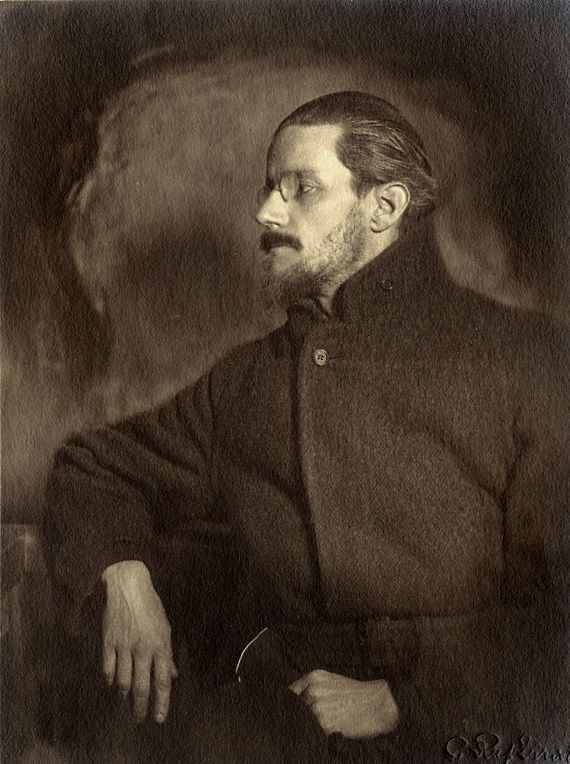
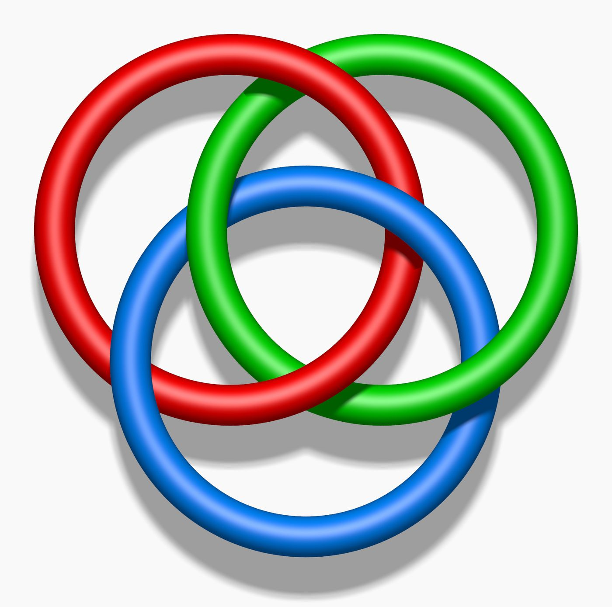
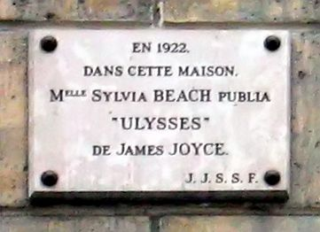

This essay first appeared in Turkish. The English version is my own. Lacan’s texts are cited in the French originals, with English translations given where one exists. Translations of Lacan’s phrases not otherwise attributed are mine.


riverrun, past Eve and Adam’s, from swerve of shore to bend of bay, brings us by a commodius vicus of recirculation back to Howth Castle and Environs.
James Joyce, Finnegans Wake (1939)
I
Lacan introduced the Borromean knot to his listeners on 9 February 1972, in a lesson of his seminar ...ou pire. By his own account he had learned of the knot the evening before, at a dinner, from a listener who followed the lectures of the mathematician Georges-Théodule Guilbaud, and the figure had fitted him, in his phrase, like a ring on a finger.1 The knot takes its name from the three rings in the coat of arms of the Borromeo family of Milan and has a simple but astonishing property. None of the three rings passes through another; taken any two at a time, they are not linked at all. But the three together are bound inseparably, and when any one of the rings is cut the other two are freed as well.2
This property is not easily seen in the picture Lacan drew for his listeners. The knot is drawn on paper by overlapping three flat circles of the same size; but as mathematicians have shown, three perfect flat circles cannot be linked in this way in space. The drawing rests on an illusion that the eye is used to completing; the real knot can be made only if at least one of the rings is bent, curved.3 Perhaps this detail had a share in Lacan’s attachment to the figure: the knot carried the gap between what the image, that is the Imaginary, shows us and the structure itself.


II
Lacan’s interest in topology was not new. In the 1960s he had used the Möbius strip, the torus, the cross-cap, figures in which inside and outside, surface and depth pass into one another, to think the structure of the subject. But these surfaces could be read as comparisons the theory resorted to in order to explain something. With the Borromean knot Lacan tried something else: to treat the figure not as a comparison but as the structure itself. It was not enough to talk about knots; they had to be drawn, made of string, passed from one to another by feel. This is why, in the last ten years of his life, Lacan worked almost every week with two young mathematicians, Pierre Soury and Michel Thomé; he wrote letters to them, had them make knots from string, took to them the problems he could not solve.
Those who attended the seminars of this period describe lessons in which speech was increasingly replaced by drawings on the board, Lacan’s long silences and the strings in his hands. Lacan, once a brilliant, winding speaker full of associations, would stumble before the knot, keep noticing a mistake in his drawing, begin again before his listeners. It is easy to read these scenes as a sign of old age, and some have read them so. But Lacan himself said that the knot was something that could be thought only by making it with the hands, by trying, by erring. Knowledge here was less a narrative than a craft.
Behind this craft lay an ideal that Lacan had stated openly in the early 1970s. In the seminar Encore he had said that mathematical formalisation is the goal and the ideal of psychoanalysis, since only it, what Lacan called the matheme, can be wholly transmitted.4 A formula could pass from one reader to another without needing the style, voice or charisma of the one who wrote it. Knots were at once the continuation and the limit of this ideal. A knot cannot be wholly translated into a formula; it can only be shown, drawn, made by hand. Lacan’s silence in his last years is perhaps the trace of a thinker seeking a wholly transmissible knowledge who meets at last something that can be shown but not said.
III
What Lacan found in this figure was a structure that expressed in the plainest way the relation of the three oldest terms of his teaching, the Real, the Symbolic and the Imaginary. In the 1950s the Symbolic had priority: the subject’s world was built within language, law, the chain of signifiers. In the 1960s the Real, as what resists symbolisation, moved ever more to the centre. The Borromean knot showed an equality in which none of the three orders can be reduced to the others and none is independent of them. The title of the seminar he gave in 1974–1975 is formed directly from the initials of these three orders: R.S.I.5 In this seminar Lacan treats each ring as a consistency and attributes to each a separate property: the consistency of the Imaginary, the hole of the Symbolic, the existence outside of the Real, in his French spelling ex-sistence.
A few weeks earlier, in a lecture at Rome in November 1974 entitled “La Troisième”, Lacan had drawn the knot with this clarity and placed the basic concepts of psychoanalysis in the regions where the rings overlap.6 In the common area of the three rings, in the middle, stands the object-cause of desire, objet petit a. Where the Symbolic and the Real intersect lies phallic jouissance; where the Symbolic and the Imaginary intersect, meaning; where the Imaginary and the Real intersect, what Lacan calls the jouissance of the Other. In the seminar R.S.I. Lacan adds to this diagram the three terms of Freud’s book of 1926: inhibition is tied to the Imaginary, symptom to the Symbolic, anxiety to the Real. Freud’s clinical observations can thus be rethought as events arising in different regions of a knot, in the places where one overflows into another.
The most fruitful side of this view is that it lets us think the clinical structures as different ways of knotting. In neurosis the three rings are somehow held together. In psychosis there is an error in the knot, in Lacan’s phrase a “lapsus”, and one of the rings is threatened with coming free. The scattering of the subject’s world with the loosening of a ring gives a structure to the clinically familiar scenes of psychosis: the world’s losing its meaning, the body’s being lived as fragmented, words being heard as imposed from outside.
IV
Within this structural picture Lacan also rereads why Freud had to add a fourth term to his own theory. In Freud the Oedipus complex, or in the expression Lacan uses in R.S.I. psychic reality, is a fourth ring that holds the three together. If the three orders on their own cannot be knotted in the Borromean way, a fourth element is needed to bind them. The name of this fourth element in the 1950s was the Name-of-the-Father.
But Lacan had long since changed his relation to this concept. In 1963 he began a seminar with a plural title, the Names-of-the-Father, and abandoned it after the first lesson following his removal from the International Psychoanalytical Association. Ten years later the title of the seminar of 1973–1974 was a pun read with the same sound in French: Les non-dupes errent, “those who are not duped err”, sounds like Les Noms du Père. The subject who tries to be rid of the father’s name without consenting to be duped loses his way. And on 13 April 1976, in the middle of the seminar devoted to Joyce, Lacan says in a single sentence where this long thought has arrived:
« Le Nom-du-Père, on peut aussi bien s’en passer, à condition de s’en servir. » One can do without the Name-of-the-Father very well, provided one makes use of it.7 With this sentence the Name-of-the-Father ceases to be a universal principle guaranteeing every subject’s world and becomes a function: the function of holding the three rings together. It is not the only thing that performs this function. Other things can do the same work.
To this fourth ring Lacan gives a new name in the Joyce seminar: sinthome. The word, as Lacan recalls, is an old French spelling of symptôme, “symptom”, and with this spelling, as was his habit, Lacan builds a series of puns. Sinthome sounds like saint homme, “holy man”; taking up Joyce’s Jesuit education and his admiration for Thomas Aquinas, Lacan also plays the word on Saint Thomas’s name and says sinthomadaquin. The sinthome is the name for the subject’s reknotting, by his own singular invention, of a knot threatening to come undone.
V
Lacan’s relation to Joyce had begun long before this seminar. In his youth, staying close to the literary circles of Paris, the surrealists, the bookshops of the rue de l’Odéon, Lacan tells of meeting Joyce in Adrienne Monnier’s bookshop at number 7 in the same street. Élisabeth Roudinesco ties this encounter to the lecture Valery Larbaud gave in this bookshop on 7 December 1921, at which passages from the still unpublished Ulysses were read in French for the first time; Lacan was then twenty.8 On the other side of the street, at number 12, was the American Sylvia Beach’s bookshop Shakespeare and Company, and Ulysses was to be published there two months later.


James Joyce was born in Dublin in 1882, the eldest surviving child of a large and increasingly poor family. His father, John Stanislaus Joyce, was a man once well off, fond of singing, drinking and talk, but unable to manage his affairs and his money. The family’s fortune melted rapidly through Joyce’s childhood; because of debts the family moved house often, furniture was sold, the children were moved from one school to another. Joyce was educated at the Jesuit colleges of Clongowes Wood and Belvedere; he was a brilliant pupil, but developed a growing distance from everything the Catholic Church and Irish nationalism expected of him. In 1904, a few months after meeting Nora Barnacle, he left Ireland with her and spent the rest of his life in self-chosen exile in Trieste, Zurich and Paris.
Joyce’s works are a series of experiments pushing the limits of language with growing daring. Dubliners appeared in 1914, and in 1916 A Portrait of the Artist as a Young Man, in which he tells his own youth through the figure of Stephen Dedalus. Ulysses was published by Sylvia Beach’s bookshop on 2 February 1922, Joyce’s fortieth birthday; this novel, which builds the story of a single day in Dublin, 16 June 1904, on the structure of Homer’s Odyssey, became one of the turning points of twentieth-century literature.9 Joyce’s last work, Finnegans Wake, the product of seventeen years of work, appeared in 1939. This book, in which English is interwoven with dozens of other languages, in which every word carries several languages, several meanings and several sounds, is a text waiting less to be read than to be deciphered, even to be heard aloud. Joyce died two years later, in January 1941, in Zurich.
VI
The bitterest side of Joyce’s life is the story of his daughter Lucia. Born in Trieste in 1907, Lucia was a gifted dancer; but in her early twenties she began to suffer severe mental crises and in the end, with a diagnosis of schizophrenia, spent most of her life in institutions. Joyce found it hard to accept his daughter’s illness; he insisted on seeing in her strange, disconnected speech a creativity like that of his own writing. According to Ellmann, Joyce wrote that whatever spark or talent he had had been transferred to Lucia and had lit a fire in her brain.
In 1934 Lucia was briefly under the treatment of Carl Gustav Jung. A few years earlier Jung had published an article on Ulysses that had not greatly pleased Joyce.10 According to Richard Ellmann’s biography of Joyce, Jung compared father and daughter to two persons going down to the bottom of the same river: one was falling, the other diving.11 This image foretells the core of Lacan’s approach to Joyce. Of two people entering the same river, what pulled one to the bottom and brought the other back to the surface?
Lacan approaches this question in the seminar through an experience very familiar in the clinic of psychosis: words imposed from outside. In this experience, known to Lacan from the case presentations at Sainte-Anne, the subject feels that the words in his head do not belong to him, that someone has put them in. Lacan carefully notes that in defending Lucia Joyce attributed telepathic powers to her, standing so close to the idea of words passing of themselves from one mind to another, and asks: who feels most that speech itself is imposed on every speaking being like a parasite? Joyce’s writing, for Lacan, is a way of turning this imposition into a work. To break language into pieces, to fuse words together, to pass sounds among languages is to turn an imposed speech into an owned writing.
VII
Lacan’s turn to the Joyce seminar began with an invitation. The Joyce specialist Jacques Aubert invited Lacan to give the opening address of the Fifth International James Joyce Symposium, which met in Paris in June 1975. Lacan gave his address on 16 June, the anniversary of the day on which Ulysses is set, at the Sorbonne, and called it “Joyce le Symptôme”, “Joyce the Symptom”.12 The seminar that began in the autumn of the same year is wholly devoted to Joyce; with Aubert’s help Lacan spent months reading Joyce’s works, his letters, the critics’ interpretations.
At the centre of Lacan’s thesis stands Joyce’s relation to his father. For Lacan, John Joyce was a father who failed to perform the paternal function symbolically for his son, who failed to equip him with a name, a law, a limit; Lacan speaks of this situation as a paternal resignation. Joyce himself had put this question at the centre of his work. In the ninth episode of Ulysses, set in the National Library of Dublin, Stephen Dedalus develops before a group of literary men a complex theory that Shakespeare played the ghost of the father in Hamlet, and argues that fatherhood is a matter not of knowledge but of belief: “Paternity may be a legal fiction.”13
The function the Name-of-the-Father should have carried remained missing in Joyce’s world. In Lacan’s theory of psychosis this lack is the condition of a dissolution. But Joyce did not dissolve. Lacan’s question arises here: what held Joyce together? Lacan’s answer is Joyce’s writing. Joyce made for himself, by his writing, the name his father had been unable to give him. According to Ellmann, Joyce said that he had put so many riddles and puzzles into Ulysses that the professors would argue for centuries over what he meant, and that this was the only way to ensure immortality.14 Lacan reads this remark not as a boast but as the expression of a wish to make his name lasting, to produce himself as a name. Joyce, in Lacan’s phrase, wanted to be a name; and he succeeded by arranging in advance an industry that universities would set up to interpret his works, an endless labour of interpretation.
VIII
Lacan also looks for the trace of a fault at a particular place of the knot in Joyce’s writing. In the last lessons of the seminar he returns to a scene from A Portrait of the Artist as a Young Man. The young Stephen is beaten by his schoolmates for holding Byron to be the greatest poet; but on the way home he realises that he feels no anger at all at the scene that has caused him such pain, that his anger falls from him easily, like the soft rind of a fruit being peeled.15 The anger, pain and shame of a beaten child generally cling to the body and do not leave it for a long time. In Stephen the body can fall away like a rind. In this scene Lacan reads a strange slackness in Joyce’s relation to his own body: the subject’s bond to his own image, the Imaginary ring, is ready to slip off the knot.
Lacan draws Joyce’s knot on the board with this fault: the Real and the Symbolic are knotted together, the Imaginary has come free. And at the exact place of the fault he adds a fourth ring that corrects it. For Lacan this ring is Joyce’s ego; not an ego in the ordinary sense, but an ego built up by writing, as an artist, as the author of a work bearing his own name. This interpretation radically transforms psychoanalysis’s old attitude towards creativity, Freud’s approach that saw art as a sublimated expression of repressed drives. Joyce’s writing is not merely the sublimation of a symptom; it is the condition of the subject’s existence. Had he not written, he might have fallen like his daughter.
This is a remarkable transformation within Lacan’s own teaching too. For the Lacan of the 1930s and 1940s the ego, in the mirror stage, was the product of a misrecognition built through the subject’s recognising himself in an external image; the work of analysis was to loosen the walls of this imaginary fortress. In the Joyce seminar the ego appears not as an illusion but as a structural element, as a repair that holds the knot. These two views do not exclude one another. The ego of the mirror stage is built through the subject’s finding himself in another’s image; Joyce’s ego is built where the mirror image could not hold, by the labour of writing, around his own name. The first leans on an appearance, the second on a work. One of the common misunderstandings of Lacan’s last period is to think that he made the Imaginary unimportant. The knot, on the contrary, shows perhaps for the first time with this clarity how destructive the loosening of the Imaginary ring can be, and how large a part the body and the image play in holding the subject’s world together.
A warning is needed here. Lacan does not diagnose Joyce and does not say that Joyce was psychotic; he leaves the question open throughout the seminar, and is at times even uneasy at asking it. What interests Lacan is less Joyce’s personal pathology than the work his writing does: how an invention that can hold a subject’s world together works where the paternal function is missing. In this seminar Joyce stands not as a patient but as a teacher.
IX
What interests Lacan most in Joyce’s writing is the place where language ceases to be a vehicle of meaning and becomes a source of pleasure in itself. In his youth Joyce had written short prose pieces he called “epiphanies”, recording words and scenes of unexplained intensity that appear suddenly in ordinary moments of daily life. In Finnegans Wake, language no longer tells something so much as turns in the midst of its own sounds, echoes and multilingual puns.
From 1971, and especially in the Encore seminar of 1972–1973, Lacan had given the name lalangue, joining in French the article and the noun, to the layer of language lived before meaning, in the infant’s babbling, in the pleasure of sound.16 Joyce’s last work is, in Lacan’s eyes, the most extreme expression in literature of this layer: the writing of the jouissance of the letter, not of meaning. This is why in “Joyce le Symptôme” Lacan describes Joyce as someone who has cancelled his subscription to the unconscious.17 The unconscious carries a meaning, a message waiting to be resolved; Joyce’s writing works where meaning is suspended. To interpret it is possible, as professors have been doing for a century; but the interpretation never ends, since the text carries less a message than a pleasure.
Seen from this angle there is a strange kinship between Joyce’s writing and Lacan’s own. Lacan’s words in his last years too lean ever more on puns, homophonies, newly coined words; the word sinthome is itself the product of such a play. Lacan’s last seminars are texts that wait more to be deciphered than to be read, and this resemblance suggests that Lacan’s interest in Joyce was not only clinical but had a personal side, concerning the future of his own teaching and the fate of his own name.
X
Beyond Joyce’s singular case, the concept of the sinthome started a transformation that touched the whole of Lacanian clinical work. Psychosis began to be thought of not only through a lack, the foreclosure of the Name-of-the-Father, but also through the solutions the subject finds to make up for this lack. A singular invention by which a subject holds himself together, a writing, a craft, a daily order, a bond, a name, may be his sinthome. The concept of “ordinary psychosis” developed by Jacques-Alain Miller and his colleagues in the late 1990s is a clinical extension of this thought: the clinic of subjects who maintain their balance without any marked collapse, by their own small and quiet inventions.18
The practical meaning of this clinical view is plain. Faced with an order, a habit, a passion in a subject’s life that looks strange, rigid or needless, the analyst does not regard it as a symptom to be removed first of all. He first asks what that order holds together. A long walk someone takes every day at the same hour, an obsessive interest in the rules of a language, a collection kept up, a job placed at the centre of a life, may sometimes be the fourth ring preventing the scattering of his world. To disturb it may mean less curing a symptom than undoing a knot.
The concept also transformed thinking about the end of analysis. In the following year’s seminar Lacan turned to thinking of the end of analysis as the subject’s identification with his symptom. At the end of the analysis the subject can take on what makes him most singular, his own symptom, no longer as a burden but as a signature. The expression Lacan uses in this context, in French savoir y faire, is knowing how to do something with the symptom: recognising it, learning to live with it and being able to make something of it.19 Joyce is, in this sense, a writer who reached this knowledge without going through an analysis.
XI
Finnegans Wake begins with the word “riverrun”, written in lower case, in the middle of a sentence, and ends in the middle of a sentence. The last sentence of the book joins on to the first sentence on the first page; the book is built as an endless cycle, a ring in which the reader returns from the last page to the first. The opening sentence I have taken as an epigraph makes the Liffey, which flows through Dublin, run past the church the people call Adam and Eve’s, from the swerve of the shore to the bend of the bay, and brings us “by a commodius vicus of recirculation” back to Howth Castle and Environs. Joyce has reversed the order in the church’s name: Eve comes first. The Latin vicus in the sentence recalls the eighteenth-century philosopher Giambattista Vico and his theory that history passes cyclically through repeating ages.20
This circle is perhaps the most beautiful image of what Lacan saw in Joyce. Joyce’s book is a ring that ties itself, a knot that holds itself. The signature of a writer who made for himself the name he could not get from his father, who dived into the river in which his daughter fell and managed to come back to the surface, who turned language itself into the material of his own salvation. This was what Lacan sought in his last years with the strings in his hands and the drawings on the board: how a subject, around his own lack, can tie the knot that holds him together. Perhaps this is the work of psychoanalysis: to accompany a subject in tying this knot, to search with him for where the knot has slackened and with what it can be bound.
Notes
- J. Lacan, Le Séminaire, Livre XIX: ...ou pire (1971–1972), ed. J.-A. Miller, Paris: Seuil, 2011, lesson of 9 February 1972. In the same lesson Lacan uses the knot to think of the chain of discourse as a structure in which the breaking of one ring scatters the whole; his placing of R, S and I on the rings becomes clear only in the following years. ↩︎
- The three rings in the Borromeo arms are traditionally read as the symbol of the alliance of the three great Lombard dynasties with which the family was united by marriage, the Borromeo, Visconti and Sforza. In mathematics such chains, in which the removal of one ring frees all the others, are called “Brunn links” after the German mathematician Hermann Brunn, who studied them in 1892. ↩︎
- That the Borromean rings cannot be built from perfect flat circles was proved in a study by M. Freedman and R. Skora published in 1987. The bending of the rings in Lacan’s own drawings and in the models he made of string is the intuitive counterpart of this mathematical fact. ↩︎
- J. Lacan, Le Séminaire, Livre XX: Encore: « La formalisation mathématique est notre but, notre idéal. » In the rest of the sentence Lacan gives as the reason that only the matheme is wholly transmissible. The formulas of the four discourses and the formulas of sexuation are two great products of this ideal in the same years. ↩︎
- J. Lacan, Le Séminaire, Livre XXII: R.S.I. (1974–1975); the text established by J.-A. Miller appeared in issues 2–5 of the review Ornicar? (1975). Read aloud in French the title sounds like hérésie, “heresy”. ↩︎
- J. Lacan, “La Troisième”, Rome, 1 November 1974; Lettres de l’École freudienne 16 (1975). ↩︎
- J. Lacan, Le Séminaire, Livre XXIII: Le sinthome (1975–1976), ed. J.-A. Miller, Paris: Seuil, 2005, lesson of 13 April 1976; English: The Sinthome, trans. A. R. Price (2016). The sentence shows that the Name-of-the-Father is no longer thought of as a universal law but through its function, as one of the instruments to which the subject has recourse to hold himself together. ↩︎
- E. Roudinesco, Jacques Lacan: Esquisse d’une vie, histoire d’un système de pensée, Paris: Fayard, 1993. Adrienne Monnier’s bookshop, La Maison des Amis des Livres, was at 7 rue de l’Odéon; Sylvia Beach’s bookshop, Shakespeare and Company, was from 1921 immediately opposite, at number 12. ↩︎
- The first edition was printed in a thousand copies by the printer Maurice Darantière at Dijon; the first two copies reached Paris by train on the morning of Joyce’s birthday. The book was banned in the United States on grounds of obscenity; the ban was lifted only by Judge John M. Woolsey’s decision of December 1933. ↩︎
- C. G. Jung, “Ulysses. Ein Monolog”, Europäische Revue, 1932. In the article Jung reads the novel as the text of a long, wearisome and dissolved consciousness, while at the same time regarding it as an honest document of the mood of the age. Joyce received the article with contempt. ↩︎
- R. Ellmann, James Joyce (1959; revised edition 1982), Oxford: Oxford University Press. Ellmann’s biography is one of the sources Lacan draws on most often in the seminar; most of what Lacan knew of Joyce’s life he learned from this book and from the documents Jacques Aubert provided him. ↩︎
- The text of the address is in the appendix to the 2005 edition of the seminar Le sinthome. A second, shorter text written by Lacan under the same title was published in 1979 in Jacques Aubert’s collection Joyce & Paris and later included in Autres écrits (Paris: Seuil, 2001). 16 June is Bloomsday, called by Joyce’s readers after Leopold Bloom. ↩︎
- J. Joyce, Ulysses (1922), episode 9, “Scylla and Charybdis”. In the same speech Stephen says that paternity, as conscious begetting, is unknown to man, that it is a mystical estate, an apostolic succession, from only begetter to only begotten. Lacan reads this episode in the seminar as a direct expression of Joyce’s relation to the question of fatherhood. ↩︎
- Ellmann, op. cit. According to Ellmann Joyce said this to the young Jacques Benoist-Méchin, who was working on the French translation of the novel and asked him for a plan of the book. ↩︎
- J. Joyce, A Portrait of the Artist as a Young Man (1916), chapter 2. Lacan takes up this scene in the lesson of 11 May 1976 and interprets it as a sign of a loosening in Joyce’s relation to his body, of the Imaginary ring being ready to slip off the knot. ↩︎
- J. Lacan, Le Séminaire, Livre XX: Encore (1972–1973), Paris: Seuil, 1975. The word first appears in Lacan’s talks in the autumn of 1971 at the Sainte-Anne Hospital. Lalangue, unlike the linguist’s system of language, is the texture of the sounds, homophonies and puns that each subject meets in his own history, which affects the body before meaning. ↩︎
- Lacan’s phrase is désabonné à l’inconscient. The formations of the unconscious, dreams, slips, symptoms, carry a meaning and call for interpretation; Joyce’s writing, according to Lacan, is built not for interpretation but for the pleasure taken from the letter itself, and therefore cannot be handled by analytic interpretation. ↩︎
- J.-A. Miller et al., La psychose ordinaire : La Convention d’Antibes, Paris: Agalma / Seuil, 1999. The concept matured in the clinical meetings held at Angers, Arcachon and Antibes between 1996 and 1998. ↩︎
- J. Lacan, Le Séminaire, Livre XXIV: L’insu que sait de l’une-bévue s’aile à mourre (1976–1977), lesson of 16 November 1976; the text appeared in issues 12–18 of the review Ornicar?. Lacan speaks here less of knowing the symptom than of knowing how to do something with it. ↩︎
- G. Vico, Scienza Nuova (1725; last edition 1744); English: The New Science. For Vico human history passes through the ages of gods, heroes and men, and begins again with a return, a ricorso. The four-part structure of Finnegans Wake follows this cycle. ↩︎
References
- Aubert, J. (Ed.). (1987). Joyce avec Lacan. Navarin.
- Ellmann, R. (1982). James Joyce (Rev. ed.). Oxford University Press.
- Joyce, J. (1916). A portrait of the artist as a young man. B. W. Huebsch.
- Joyce, J. (1922). Ulysses. Shakespeare and Company.
- Joyce, J. (1939). Finnegans Wake. Faber and Faber.
- Jung, C. G. (1932). Ulysses. Ein Monolog. Europäische Revue, 8.
- Lacan, J. (1975). La Troisième. Lettres de l’École freudienne, 16.
- Lacan, J. (1975). Le Séminaire, Livre XX: Encore (1972–1973). Seuil.
- Lacan, J. (1975). Le Séminaire, Livre XXII: R.S.I. (1974–1975). Ornicar?, 2–5.
- Lacan, J. (2001). Joyce le Symptôme. In Autres écrits. Seuil.
- Lacan, J. (2005). Le Séminaire, Livre XXIII: Le sinthome (1975–1976). Seuil.
- Lacan, J. (2011). Le Séminaire, Livre XIX: ...ou pire (1971–1972). Seuil.
- Miller, J.-A., et al. (1999). La psychose ordinaire : La Convention d’Antibes. Agalma / Seuil.
- Roudinesco, E. (1993). Jacques Lacan: Esquisse d’une vie, histoire d’un système de pensée. Fayard.
- Vico, G. (1744). Principj di Scienza Nuova (3rd ed.). Naples.